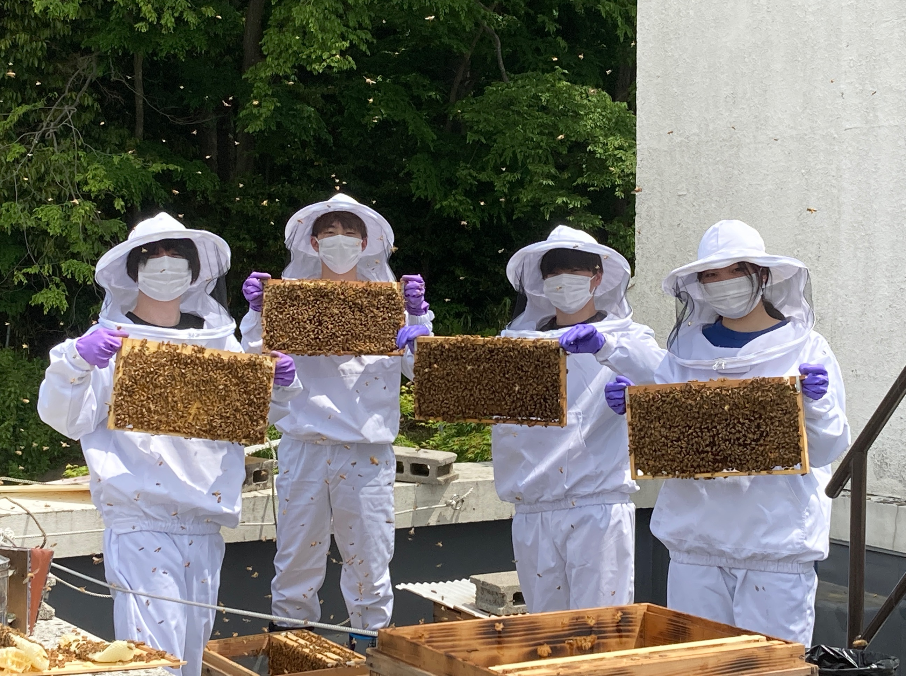
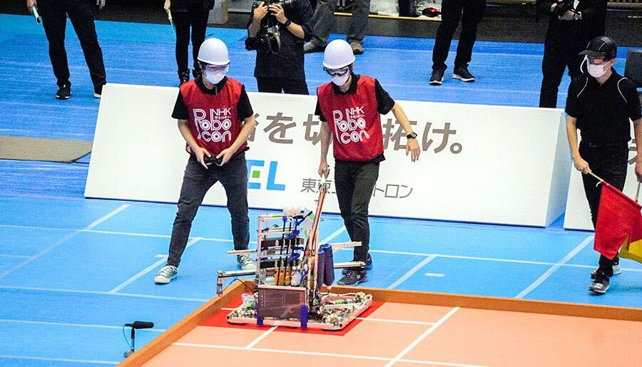
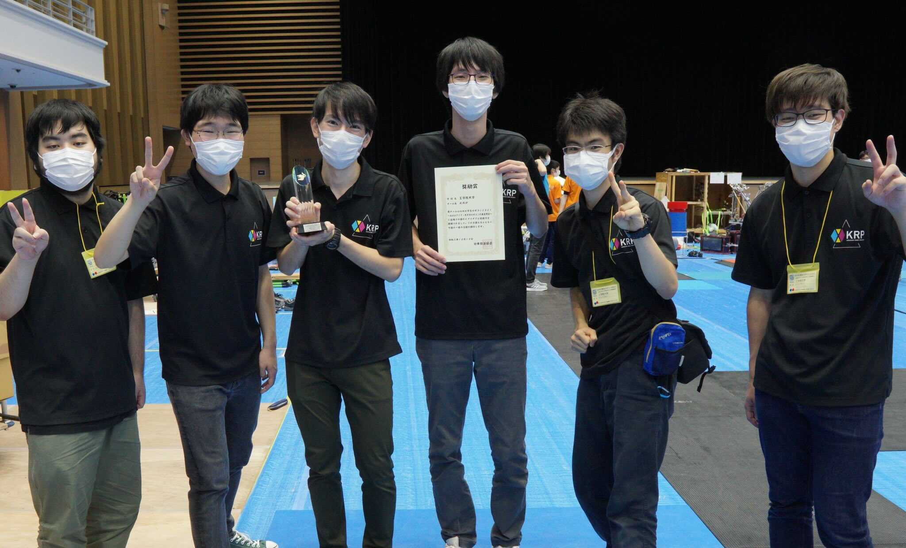
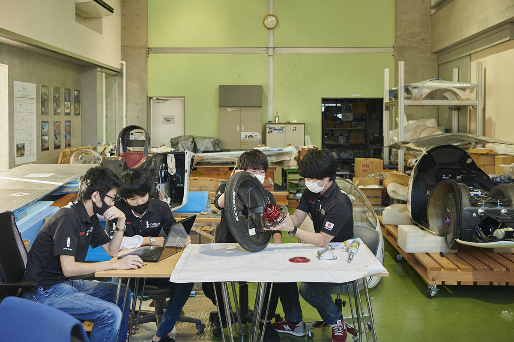
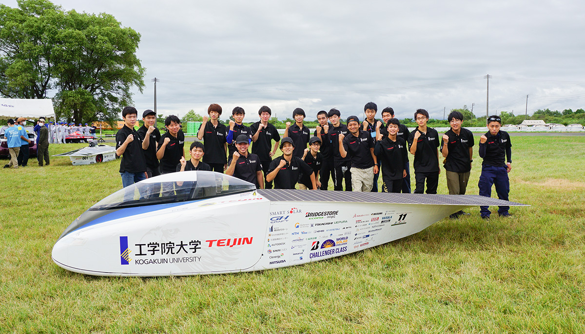
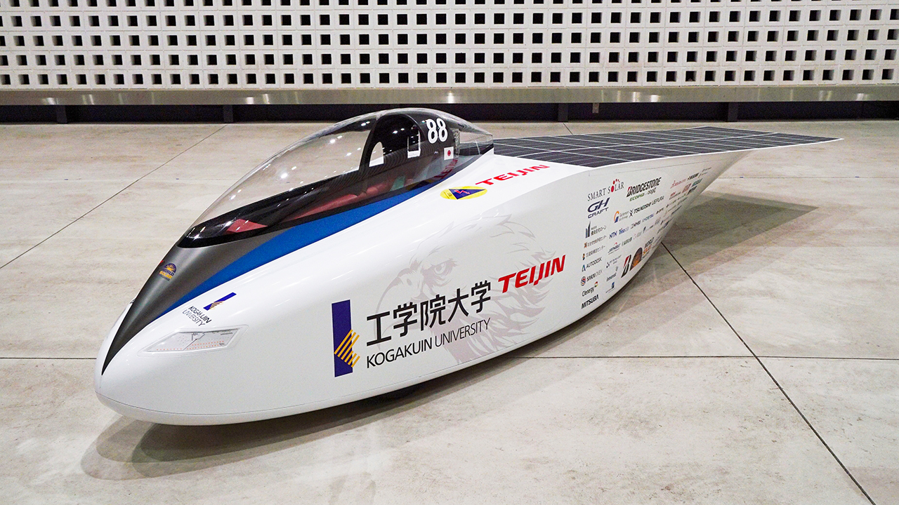
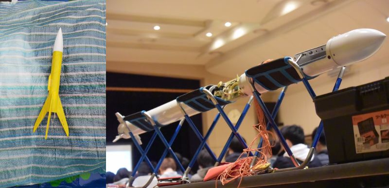
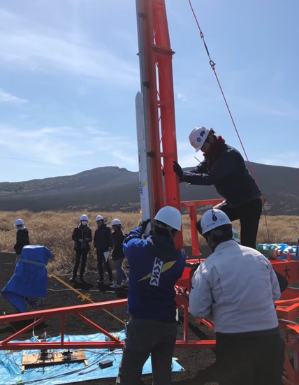

学生プロジェクト展示
工学院大学みつばちプロジェクト
活動内容

私たちはミツバチを飼育する「養蜂」を行うプロジェクトです。
通常は週に 1 度の内検と呼ばれるミツバチの巣を点検する作業を行っています。
そして学園祭や環境や農業に関するイベントに参加して私たちの活動や養蜂に関する広報的活 動も行っています。
制作物
外部の企業や Science Create Project の方々と協力をしてハチミツを利用した入浴料とハンドクリームをこれまでに製作しました。
入浴料:2018 年度制作
ハンドクリーム:2019 年度制作
SNS
KRP(工学院大学ロボットプロジェクト)
活動内容

KRP(Kogakuin Robot Project の略)とは、2000 年に始動した、ロボット制作を軸とした工学院 大学の学生プロジェクトです。
KRP では、ロボットのアイデアを出す段階から実際に制作するまで、全ての工程を学生が行い、ロボットの回路・機構・制御などのロボット製作に関する技術を基礎から学ぶことができます。
さらに、ロボット制作に必要な創造性や技術を磨くとともに、チームでロボットを制作することでコミュニケーション力をつけ、さらに制作の難しさや楽しさを経験することができます。
KRP は、基本的に毎年 6 月に開催される「NHK ロボットコンテスト」、さらにその優勝者だけが 出場できる世界大会「ABUロボットコンテスト」への出場を目標に活動しています。
過去の大会出場歴、受賞歴、成果

2002 年 NHK 大学ロボコン出場【競技課題:富士山頂を目指せ!】 2003 年 NHK 大学ロボコン出場【競技課題:タクローの覇者】 ◆技術賞/特別賞 Panasonic 受賞
2005 年 NHK 大学ロボコン出場【競技課題:万里の長城を照らせ!】 2006 年 NHK 大学ロボコン出場【競技課題:ツインタワー・ビルダー】 ◆デザイン賞受賞
2008 年 NHK 大学ロボコン出場【競技課題:ゴヴィンダ】
2009 年 NHK 大学ロボコン出場【競技課題:旅は道連れ 勝利の太鼓を打て】
2010 年 NHK 大学ロボコン出場【競技課題:ロボ・ファラオ ピラミッドを築け】
2011 年 NHK 大学ロボコン出場【競技課題:ロイ・クラトンの火をともせ!】
2012 年 NHK 大学ロボコン出場【競技課題:平安大吉(ペンオンタイガ)】
2013 年 NHK 大学ロボコン出場【競技課題:THE GREEN PLANET】
2014 年 NHK 大学ロボコン出場【競技課題:A SALUTE TO PARENTHOOD】
2015 年 NHK 大学ロボコン出場【競技課題:ROBOMINTO:BADMINTON ROBO-GAME】 2016 年 NHK 大学ロボコン出場【競技課題:Clean Energy Recharging the World】
2017 年 NHK 大学ロボコン出場【競技課題:The Landing Disc】◆デザイン賞受賞
2020 年 Discovery Hackathon2020 入賞
2021 年 NHK 大学ロボコン出場【競技課題:投壺 ~トゥフー~】◆特別賞 東京エレクトロン株式会社受賞
制作物
NHK 学生ロボコン 2021 の競技テーマは「投壺 ~トゥフー~」という古代中国の伝統的な壺へ 矢を投げ入れる遊びを模したルールでした。
このロボットはそのテーマに合わせ、遠くに設置された小さな壺をめがけて矢を発射する発射 機構を搭載したロボットです。
最大 12m先まで矢を飛ばす性能を持ち、狙った壺めがけ正確に 矢を発射することができます。

写真は、10 月 10 日に開催された NHK 学生ロボコン 2021 に出場し、見事特別賞を獲得したス ローイングロボット(TR)です。
SNS
工学院大学ソーラーチーム
活動内容

工学院大学ソーラーチームは、太陽光を動力源としたソーラーカーの開発をして、独創的な車体 をモットーに世界大会優勝を目指しています。
2019 年に開催された世界最高峰のソーラーカーレース、2019 Bridgestone World Solar Challenge で 5 位に入賞しました。
オーストラリア政府の最高研究機関より、CSIRO イノベーションアワ ードを日本勢で初めて受賞しました。
今年度より次世代教育プログラムを開始し、附属中高自動車のサポートを通した人材育成活動 も開始しました。
8 月に秋田県大潟村で行われた国内大会、World Green Challenge では、2 年後の世界大会を見 据えオーストラリアで主役となる下級生メンバーが準優勝を勝ち取りました。
10 月は本年度に中止となった Bridgestone World Solar Challenge の代えのオンライン大会 Telemetry Challenge に参加しました。
チームは車体を製作するだけでなく、帝人様やブリヂストン様などの展示会、モーターショー、 科学教室、オープンキャンパスに参加する社会貢献活動を行っております。
ソーラービークル研 究センターとして国際学会などの学術的な機関へ参加しています。
チーム運営は技術のみならず、スポンサー集め、広報を含むチームマネジメントが重要になりま す。総合的な活動を学生主体で行っています。
2023 年オーストラリアで世界優勝を目指し、鋭意、活動をしています。
過去の大会出場歴、受賞歴、成果

2011年 8月 ワールド・グリーン・チャレンジ 準優勝
（前回大会の経験を活かし準優勝の躍進。）
2012年 8月 ワールド・グリーン・チャレンジ 優勝
ソーラーカー部門とチャレンジクラスで優勝、 2冠制覇。
2013年10月 ブリヂストンワールドソーラーチャレンジ
2号機Practiceを製作し、世界初参戦。
世界で最初にブリヂストンよりOlogicタイヤ供給を得る。
2014年 8月 ワールド・グリーン・チャレンジ 優勝
技術賞、大潟村村長賞を受賞。断トツの成績で優勝。
2015年 10月 ブリヂストンワールドソーラーチャレンジ 準優勝
3号機OWLを製作し参戦。レース走行はトップでゴール。
総合順位で準優勝。
2016年 8月 ワールド・グリーン・チャレンジ(国内) 優勝
大会新記録樹立。チーム史上初・女性ドライバー誕生。
2017年 10月 ブリヂストンワールドソーラーチャレンジ 7位
4号機Wingを製作し参戦。独創的な車体形状で注目を浴びる。
2018年 8月 ワールド・グリーン・チャレンジ(国内) 優勝
古川電池技術賞を受賞
電気学会 電子・情報・システム部門大会 優秀ポスター賞を受賞
2019年 10月 ブリヂストンワールドソーラーチャレンジ 5位
5号機Eagleを製作し参戦。
オーストラリア連邦科学産業研究機構(CSIRO)公認の技術賞
「CSIROテクニカルイノベーションアワード」を日本勢初で受賞。
帝人未来フォーラム 優秀賞を受賞
2021年8月 ワールド・グリーン・チャレンジ(国内) 準優勝
5号機Eagleで参戦。下級生メンバーで勝利を勝ち取る。
制作物
“自然模倣”のデザインで空気抵抗を大幅削減 ソーラーパネルには人工衛星用太陽電池を搭載するなど、航空宇宙用の材料を利用した最新技術を搭載しています。車体先頭（ノーズ）は受ける風を車体後方へ綺麗に流すよう鷲（Eagle）のくちばしを模した形状で、“生物模倣”となる設計を行いました。 また、学生自らが開発・設計した多くのアイデアを単胴型車両に取り入れ空気抵抗を大きく改善しました
SNS
モデルロケットプロジェクト
活動内容

私達はモデルロケットとハイブリッドロケットの二種類のロケット開発を行っています。
モデルロケットとは、紙材や木材を用いたロケットで、燃料に火薬を混合したものを使います。エンジンは全て既製品で、国内で活発に打ち上げが行われています。
もう一種のハイブリッドロケットは、酸化剤と固形燃料(還元剤)の燃焼反応により推進するロケットです。
金属加工を用いることも多く、製作と打上において高い技術を要します。このロケットのメリットは到達高度が高いことや、頑丈なのでたくさんの物を載せられることです。
普段は八王子キャンパスの夢づくり工房で活動を行っています。加えて、毎年夏と春に県外で共同打上実験が行われており、そこでの打上活動を頑張っています。
過去の大会出場歴、受賞歴、成果
2019年に伊豆大島共同打上実験にてハイブリッドロケットを打ち上げました。
制作物

外部の企業や Science Create Project の方々と協力をしてハチミツを利用した入浴料とハンドクリームをこれまでに製作しました。
 HOMEに戻る
HOMEに戻る